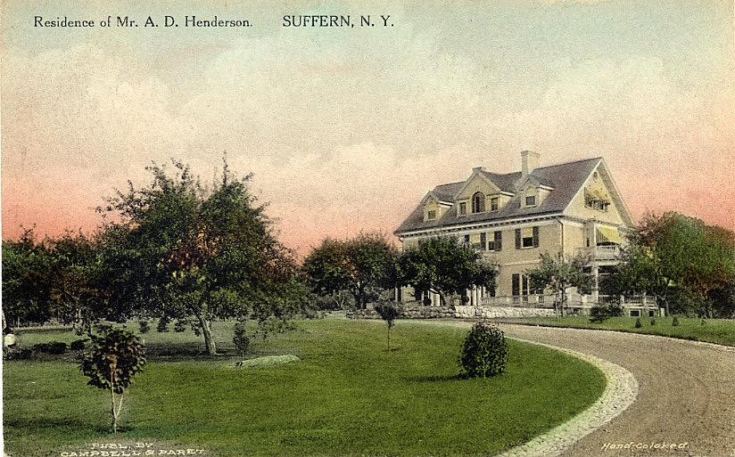

Residence of A. D. Henderson
Suffern, New York
History
This was the home of Alexander Dawson Henderson Sr., and his wife Ella Brown Henderson, located at Campbell Avenue and the Nyack Turnpike (present-day Route 59) in Suffern, New York. Henderson began his career as a bookkeeper in New York City with the California Perfume Company, now known as Avon Products, and eventually rose to become the company’s vice president and treasurer.
After spending several summers in Suffern, Henderson decided to make the community his permanent home. In 1906, he purchased a 14-acre farm and hired architect William Hoar to design a Georgian-style residence on a hill overlooking the Nyack Turnpike. The property developed into a working country estate with a large vegetable garden, greenhouse, cow, and a lake stocked with fish. A butler and household cook were among the staff who helped maintain the home and accommodate the Henderson family. The residence stood for 45 years before it was razed in 1951.


Alexander D. Henderson Sr. built a cottage in Suffern, New York, for his son, Alexander Henderson Jr., and his wife, Mary. The cottage stood across the road from Henderson Sr.’s two-story home at 173 South Monsey Road. lexander Jr. and Mary lived there with their children, Alex and Mary-Ella, from 1922 to 1929. The children’s German nanny lived upstairs, and the household also employed a cook.


A postcard was made of their Suffern house looking at the residence from the bottom of the driveway. The printing at the top of the postcard reads: “Residence of Mr. A. D. Henderson, Suffern, N.Y.” Source: Suffern Free Library, Suffern, New York; postcard; col.; 3 x 5 in. (7.7 x 12.7 cm.).

Last update: October 6, 2026